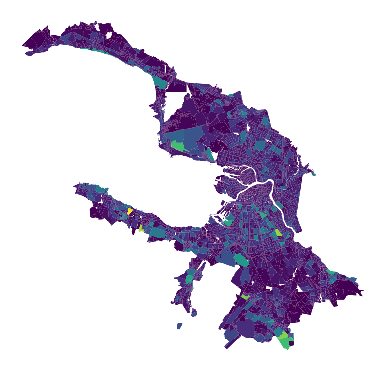
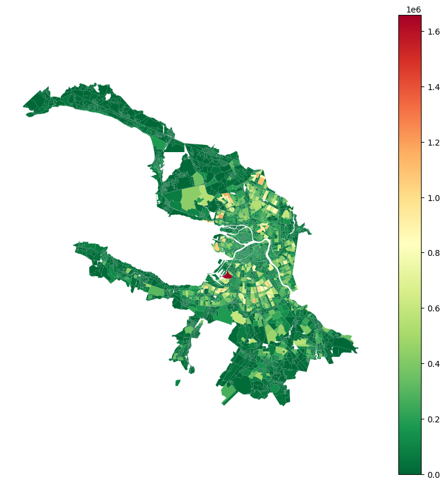
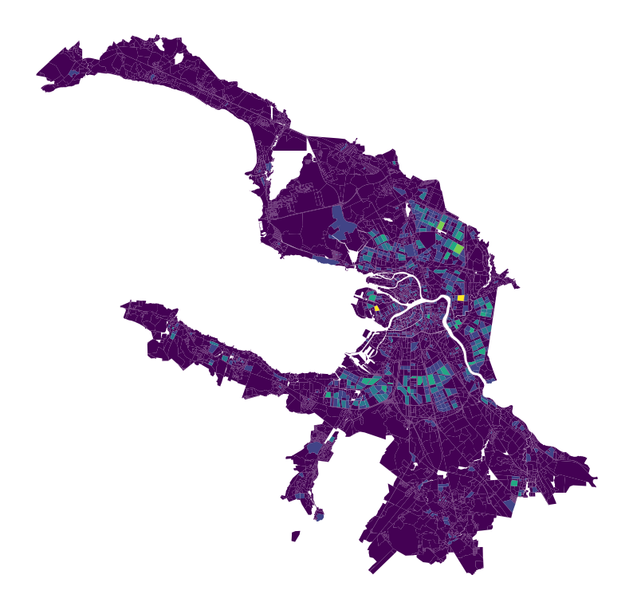
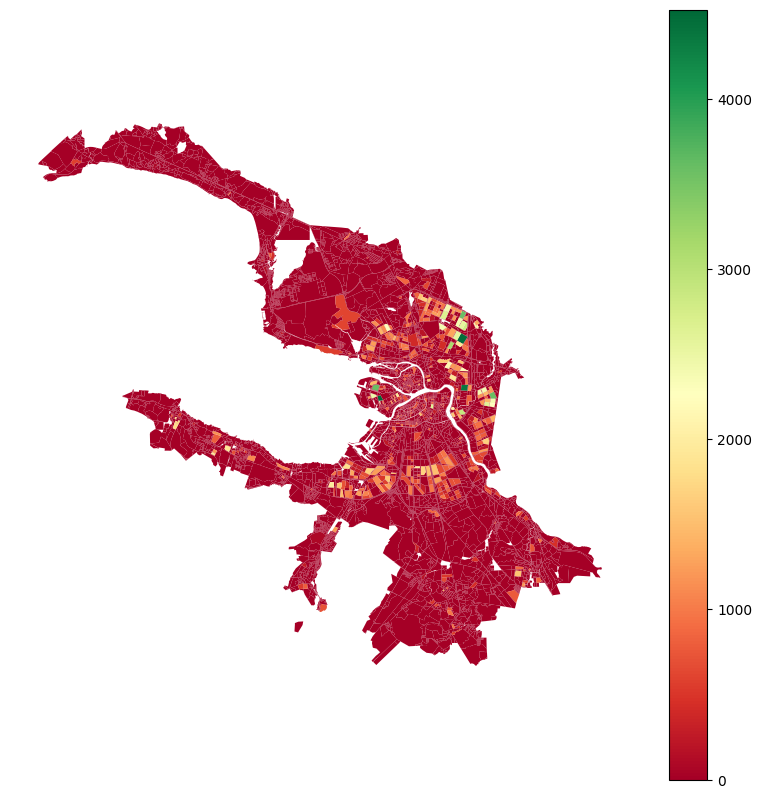

[1]:
import geopandas as gpd
blocks_gdf = gpd.read_parquet('./../data/blocks.parquet')[['geometry']]
blocks_gdf.head()
[1]:
| geometry | |
|---|---|
| id | |
| 0 | POLYGON ((354918.622 6625258.829, 354901.464 6... |
| 1 | POLYGON ((355412.142 6623378.149, 355411.700 6... |
| 2 | POLYGON ((353934.329 6625429.433, 353923.453 6... |
| 3 | POLYGON ((355099.099 6623847.765, 355074.808 6... |
| 4 | POLYGON ((352766.168 6621954.748, 352744.412 6... |
Buildings aggregation
[2]:
buildings_gdf = gpd.read_parquet('./../data/buildings.parquet')[['geometry', 'build_floor_area', 'footprint_area']]
buildings_gdf.head()
[2]:
| geometry | build_floor_area | footprint_area | |
|---|---|---|---|
| id | |||
| 158414 | POLYGON ((354964.060 6625185.771, 354959.684 6... | 15.035234 | 15.030958 |
| 150194 | POLYGON ((355008.167 6625301.606, 355012.344 6... | 22.191954 | 22.185639 |
| 58769 | POLYGON ((354878.941 6625544.327, 354882.984 6... | 31.272943 | 31.264070 |
| 158321 | POLYGON ((355037.286 6624978.295, 355060.347 6... | 158.369888 | 158.324760 |
| 36319 | POLYGON ((354643.688 6625735.942, 354657.286 6... | 192.764221 | 192.709820 |
[3]:
from blocksnet.blocks.aggregation import aggregate_objects
blocks_gdf, objects_gdf = aggregate_objects(blocks_gdf, buildings_gdf)
2025-03-26 16:34:06.826 | INFO | blocksnet.blocks.aggregation.core:_preprocess_input:11 - Preprocessing input
2025-03-26 16:34:08.024 | INFO | blocksnet.blocks.aggregation.core:aggregate_objects:38 - Aggregating objects
[4]:
blocks_gdf.head()
[4]:
| geometry | build_floor_area | footprint_area | objects_count | |
|---|---|---|---|---|
| id | ||||
| 0 | POLYGON ((354918.622 6625258.829, 354901.464 6... | 43840.686518 | 13953.390266 | 13.0 |
| 1 | POLYGON ((355412.142 6623378.149, 355411.700 6... | 10294.395525 | 5051.410558 | 17.0 |
| 2 | POLYGON ((353934.329 6625429.433, 353923.453 6... | 1173.871643 | 1163.480697 | 5.0 |
| 3 | POLYGON ((355099.099 6623847.765, 355074.808 6... | 46303.954706 | 11085.135352 | 19.0 |
| 4 | POLYGON ((352766.168 6621954.748, 352744.412 6... | 153749.574111 | 45222.959595 | 83.0 |
[6]:
objects_gdf.head()
[6]:
| geometry | build_floor_area | footprint_area | objects_count | |
|---|---|---|---|---|
| id | ||||
| 799 | POINT (359976.856 6653615.717) | 48.900291 | 48.884676 | 1 |
| 149177 | POINT EMPTY | 36.114338 | 0.000000 | 1 |
| 117246 | POINT (343574.869 6659119.948) | 65.547600 | 65.534469 | 1 |
| 124423 | POINT (342995.754 6653420.954) | 20.652546 | 20.648502 | 1 |
| 113602 | POINT (319549.989 6646766.805) | 147.496292 | 147.496007 | 1 |
[7]:
blocks_gdf.plot('objects_count', figsize=(10,10)).set_axis_off()

[8]:
blocks_gdf.plot(column='build_floor_area', legend=True, figsize=(10, 10), cmap='RdYlGn_r').set_axis_off()

Services aggregation
[9]:
services_gdf = gpd.read_parquet('./../data/services.parquet')[['geometry', 'capacity', 'service_type']]
services_gdf = services_gdf[services_gdf['service_type'] == 'school']
services_gdf.head()
[9]:
| geometry | capacity | service_type | |
|---|---|---|---|
| 89 | POINT (344901.025 6636842.991) | 105 | school |
| 123 | POINT (344572.765 6637377.808) | 544 | school |
| 421 | POINT (343490.888 6636544.706) | 482 | school |
| 613 | POINT (337815.236 6630648.737) | 75 | school |
| 650 | POINT (355309.295 6618733.164) | 942 | school |
[10]:
blocks_gdf, objects_gdf = aggregate_objects(blocks_gdf, services_gdf)
2025-03-26 16:34:53.109 | INFO | blocksnet.blocks.aggregation.core:_preprocess_input:11 - Preprocessing input
2025-03-26 16:34:53.116 | INFO | blocksnet.blocks.aggregation.core:aggregate_objects:38 - Aggregating objects
[11]:
blocks_gdf.head()
[11]:
| geometry | capacity | objects_count | |
|---|---|---|---|
| id | |||
| 0 | POLYGON ((354918.622 6625258.829, 354901.464 6... | 0.0 | 0.0 |
| 1 | POLYGON ((355412.142 6623378.149, 355411.700 6... | 0.0 | 0.0 |
| 2 | POLYGON ((353934.329 6625429.433, 353923.453 6... | 0.0 | 0.0 |
| 3 | POLYGON ((355099.099 6623847.765, 355074.808 6... | 0.0 | 0.0 |
| 4 | POLYGON ((352766.168 6621954.748, 352744.412 6... | 0.0 | 0.0 |
[13]:
blocks_gdf.plot(column='objects_count', figsize=(10, 10)).set_axis_off()

[14]:
blocks_gdf.plot(column='capacity', legend=True, figsize=(10, 10), cmap='RdYlGn').set_axis_off()
